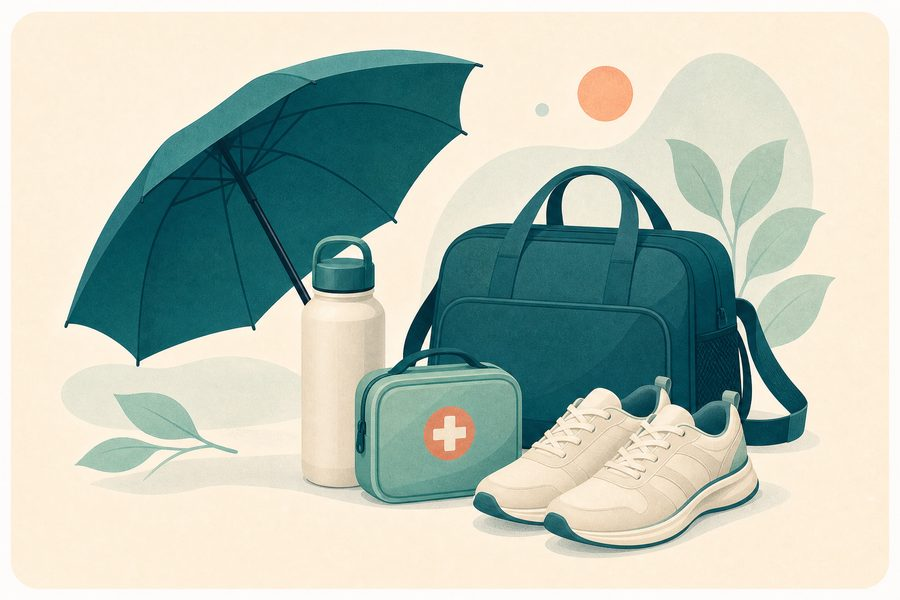

قائمة الاستعداد الصحي للحج
راجع تجهيزاتك الصحية الأساسية قبل السفر للحج في قائمة محلية قابلة للتأشير.

ملاحظات مهمة
هذه القائمة للتنظيم والتوعية فقط. في الحالات المزمنة، ناقش السفر أو تغيير النشاط والأدوية مع طبيبك، واحتفظ بتقاريرك ووصفاتك وكمية كافية من الأدوية حسب توجيه المختص.
المصدر
أسئلة شائعة عن قائمة الاستعداد الصحي للحج
إجابات مختصرة تساعدك على فهم حدود الأداة واستخدامها بصورة أكثر وعيًا.
ما فائدة قائمة الاستعداد الصحي للحج؟
تساعد على تنظيم الأدوية والوثائق والماء والملابس وخطة المشي والسفر، لكنها لا تستبدل التقييم الطبي قبل الرحلة.
ماذا أراجع قبل السفر؟
راجع الأدوية الموصوفة واللقاحات والتعليمات الخاصة بالأمراض المزمنة مع طبيبك، واحتفظ بقائمة واضحة بالأدوية ومواعيدها.
كيف أتعامل مع الحرارة والمشي؟
خطط لفترات راحة، واشرب باعتدال وفق احتياجك، واستخدم ملابس مناسبة، وتجنب المجهود في أشد ساعات الحرارة قدر الإمكان.
متى أطلب المساعدة أثناء الرحلة؟
اطلب المساعدة عند ضيق التنفس أو ألم الصدر أو الإغماء أو الارتباك أو أعراض شديدة، ولا تحاول إكمال الشعائر قبل التقييم.